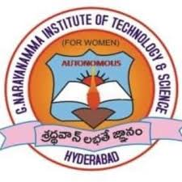

G.NARAYANAMMA INSTITUTE OF TECHNOLOGY & SCIENCE

About Us
G. Narayanamma Institute of Technology Science (for Women), Hyderabad Is Committed to Imparting Quality Education and Training for Women Empowerment in the Field of “engineering and Technology” and to Satisfy Applicable Requirements. GNITS Is the Top Women’s Engineering College in Hyderabad Which Is Leading the Future for Women in Engineering and Technology.
CSE department
ECE department